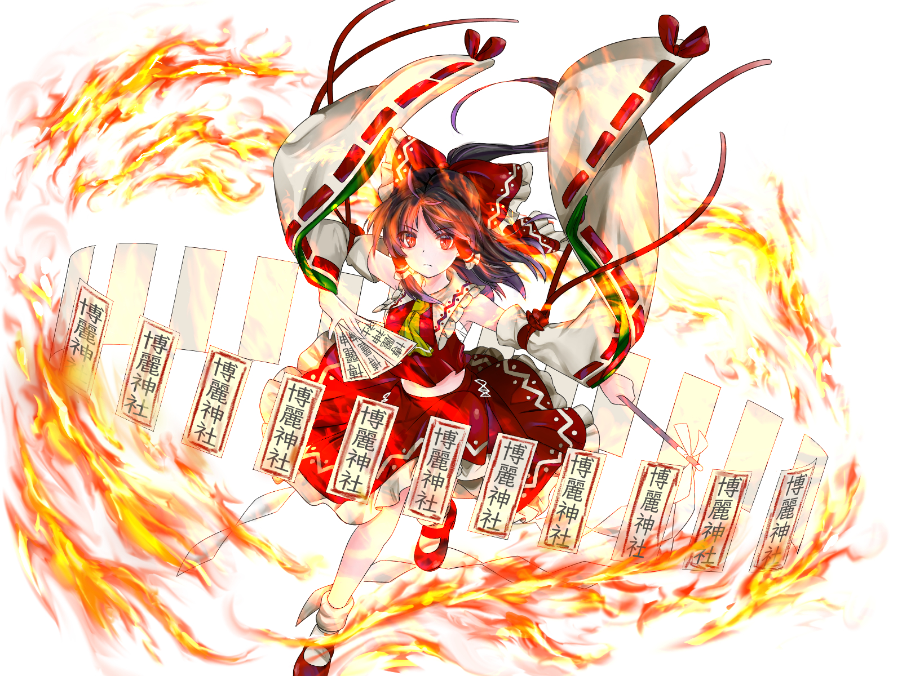

Digital Illustration
デジタルイラストはやろうやろうと思いつつあまりできてないです。 どちらも「塗りマス」という塗り絵コンテストに応募した作品です。 あんまり上手ではないですね。 最近iPadのペーパーライクフィルムを買ったのでもう少し積極的にやっていきたいです。 デジタルでやれば早く描けると思っていたのですが、なんならやること増えるので結構大変で。


デジタルイラストはやろうやろうと思いつつあまりできてないです。 どちらも「塗りマス」という塗り絵コンテストに応募した作品です。 あんまり上手ではないですね。 最近iPadのペーパーライクフィルムを買ったのでもう少し積極的にやっていきたいです。 デジタルでやれば早く描けると思っていたのですが、なんならやること増えるので結構大変で。